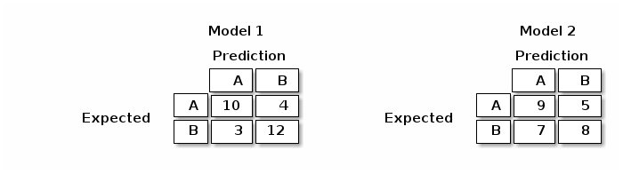
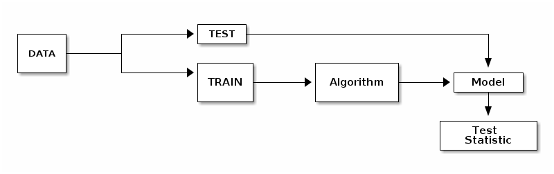
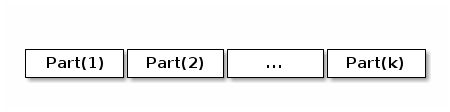
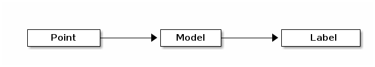

Math 555E
Atabey Kaygun
Thursday, March 18, 2021
WARNING
Democratization of Computation
- Computational tools are cheap and ubiquitous
- Computational power is cheap and ubiquitous
- This is good
- But also is dangerous
Cargo-Cult data analysis
Don’t fall into the trap of Cargo-Cult Data Analysis.
- Having data and making calculations with data doesn’t mean you’re doing data analysis.
- Emphasis is on analysis not on computation.
Statistical tests
“Einmal ist keinmal”
- Statisticians have a good catalogue of random phenomena.
- They also have tests to distinguish random variables.
- Tests come with confidence levels and confidence intervals.
Hypothesis testing
- Formulate two disjoint hypotheses H0 and H1 where H0 is default.
- Design a measure (statistic) that distinguishes H0 from H1.
- either reject H0 and accept H1
- or fail to reject H0
- then what?
Types of things we can test and measure
- Means and variances
- Whether measurements are different
- Dependence between numerical variates
- Dependence between categorical variates
Example 1
Say we have two models and data is split into 5, and we evaluate the cost/fit function on these models.
| Model 1 | Model 2 |
|---|---|
| 1.025045 | 1.238022 |
| 1.088714 | 1.258800 |
| 0.926672 | 1.159097 |
| 1.014031 | 1.199927 |
| 1.138273 | 1.318249 |
Are these models different?
For the cost values above we use paired t-test
test-statistic = -5.35, p-value=0.0005
Example 2
Data
| Expected | Model 1 | Model 2 |
|---|---|---|
| A | A | A |
| A | B | B |
| A | A | B |
| … | … | … |
| B | B | A |
| B | B | B |
Confusion matrix

Which of these models is better?
There is a test for that.
For the tables above:
Model 1: statistic=8.10, p-value=0.044
Model 2: statistic=1.21, p-value=0.751
Supervised Learning
Data and cost function
- Data consists of (input, expected output) pairs.
- We have a measure of how well the model fits.
- Expected output drives the cost function.
\[ \theta_0 = argmin_\theta\ \text{Cost}(\text{Model}(\theta),\text{Data}) \]
Cross-validation
- How sure are we about the true value of \[ \text{Cost}(\text{Model}(\theta),\text{Data}) \]
- Need some randomness
- Split data into pieces and evaluate
- Analyze statistically
Cross-validation methods
Hold-out CV

k-fold CV

Algorithm
- For each Part(i) do
- Train Model(i) on all but Part(i)
- Test Model(i) on Part(i) and record
Leave-one-out CV
Same as k-fold where each Part(i) is one point.
Unsupervised Learning
Data and fit function
- Data consists of inputs but no expected outputs
- We again have
- a fit function
- or a cost function
- Application drives the fit/cost function
A Case Study
k-means vs k-nn
- k-means is an unsupervised clustering model
- k-nn is a supervised classification model
- They both split a data set into disjoint subsets
k-Nearest Neighbors
Setup:
We have labeled data points embedded in a vector space \[ (x,p) \qquad x\in \mathbb{R}^n,\ p\in \{1,\ldots,\ell\} \]
We need to form a model

The Input
- Input
- k: the number of neighbors (an odd number)
- D: a finite subset
- d: a metric
- x: a point whose label is unknown
The Algorithm
- Find k points in D closest to x
- Get the labels of these k points from D
- Count the labels and find the most frequent label L
- Return the label L for x
Demo
k-means
Setup:
We have unlabeled data points embedded in a vector space \[ x\in \mathbb{R}^n \]
We need to form a model

The Input
- Input
- k: the number of clusters
- D: a finite subset
- x: a point whose label is unknown
The Algorithm (Model building)
- Initialize k empty bags
- Sample k-random points \(x_1\) ,…, \(x_k\) from D
- For each point \(x\) determine determine which of \(x_i\) is closest and put in in bag(i)
- For each bag(i) find the centroid \(y_i\)
- If \(x_i\)’s are sufficiently close to \(y_i\)’s return \(y_i\)’s
- Let \(x_i\) = \(y_i\) for i = 1, … , k and go to step 3
Prediction
- Given x and \(y_1\), … , \(y_k\) in \(\mathbb{R}^n\)
- Find closest \(y_i\) to \(x\)
- Return i